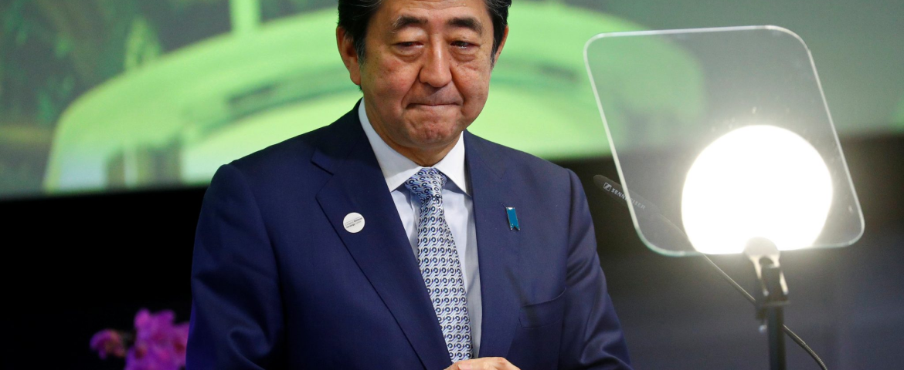

- D.C. Officers Tagged ‘Threat to Safety’ Remain on the Force

Even without Shinzo Abe, Japan may build up its military
As Japanese prime minister in this Oct. 27, 2013, file photo, Shinzo Abe, right, reviewed members of Japan Self-Defense Forces during the Self-Defense Forces Day at Asaka Base, north of Tokyo. Abe was assassinated during a speech on July 8, 2022, in western Japan.
By NewsJul 12, 2022

The Hill | Donald Kirk | July 11, 2022
The assassination of Japan’s longest-serving prime minister, Shinzo Abe, deprived the Asia-Pacific region of a statesman whose greatest legacy is that of a staunch foe of China and North Korea. Americans may remember him as pro-American, an advocate of the U.S.-Japan alliance, but above all he was pro-Japanese.
Among Abe’s greatest concerns, and that of his successors as prime minister, is that Americans would tire of their commitment to defend Japan and South Korea, leaving both of these crucial U.S. allies to the mercies of North Korean nuclear-tipped missiles backed up by China, the nation that saved the North from destruction in the Korean War. Abe, as prime minister in 2006-2007 and then from 2012 to 2000, was not going to let that happen.
As Japanese prime minister in this Oct. 27, 2013, file photo, Shinzo Abe, right, reviewed members of Japan Self-Defense Forces during the Self-Defense Forces Day at Asaka Base, north of Tokyo. Abe was assassinated during a speech on July 8, 2022, in western Japan.
It was for that reason that Abe strove mightily to do away with Article 9 of Japan’s postwar constitution, foisted on Japan in 1947 during its occupation under the victorious Gen. Douglas MacArthur. Abe’s fondest desire, as North Korea’s leader Kim Jong Un sent missiles flying over Japan and staged nuclear tests, was to tear Japan away from the constraints of Article 9.
To Abe, the first sentences of Article 9 — “Aspiring sincerely to an international peace based on justice and order, the Japanese people forever renounce war as a sovereign right of the nation and the threat or use of force as means of settling international disputes” — was a liability. How was Japan to resist its enemies, with or without its American ally, while bound by a literal reading of these noble words?
Related: Former Japanese Prime Minister shot dead at campaign rally
Abe’s seemingly modest initial goal was to change the nomenclature so the Japan Self-Defense Forces, the cover-up name of the Japanese military establishment that arose despite Article 9, could be named what they are: the armed forces of Japan. He faced enormous opposition on all sides, however.
Japanese might not have liked to have had their constitution essentially written by their conquerors, but a majority of Japanese probably still support Article 9; they have no desire to change the status quo at the risk, many believe, of another terrible war. Abe’s call for revision encountered bitter opposition not only from leftist foes of the long-ruling Liberal-Democratic Party but also from moderates within the LDP.
It was not lost upon Abe’s critics that his maternal grandfather was Nobusuke Kishi, designated a Class A war prisoner by the Americans for his cruelty in ruling Manchuria, which the Japanese after overrunning much of China renamed Manchukuo, a Japanese satellite until the end of the Pacific War. Imprisoned after the Japanese surrender in 1945, Kishi was released in time to help found the LDP, often described as neither liberal nor democratic, in 1955. As prime minister in the late 1950s, Kishi focused on rebuilding the shattered Japanese economy. A younger brother, Eisaku Sato, served as prime minister from 1964 to 1972 and a son, Shintaro Abe, Shinzo’s father, was foreign minister from 1982 to 1986.
For Abe, in keeping with the family legacy of conservative nationalism, the change in name of the Self-Defense Forces would portend a basic shift in mission. Here again, Article 9 specifically stands in the way. The second sentence of this remarkable 75-word stricture states clearly that “land, sea, and air forces, as well as other war potential, will never be sustained.” Moreover, it concludes with a simple unambiguous line, “The right of belligerency of the state will not be recognized.”
For Abe, there had to be a way to free Japan from what he saw as the shackles of Article 9. Japan needed to be free to send its forces overseas. How else could the Japanese stave off a Chinese assault on Taiwan, the island province that the Chinese persist, with ever louder rhetoric, in vowing to recover? And what would the Japanese do if the Chinese tried to seize the nearby Senkaku Islands, held tenaciously by Japan but constantly threatened by Chinese “fishing boats” and reconnaissance aircraft? Across the Sea of Japan, how effectively could Japan battle the North Koreans, supported by the Chinese and probably the Russians, if North Korea were to go beyond testing nukes and missiles and actually fire them for real?
The answer for decades has been that Japan would rely on the United States, which still has 50,000 troops in Japan, including vital air and marine bases on Okinawa and the naval base at Yokosuka, south of Tokyo, as well as 28,500 troops in South Korea. Donald Trump, as president, did not inspire confidence, however, when he spoke about withdrawing U.S. troops from both countries. Moreover, memories of the history of Japan’s colonial domination of Korea still burn in the Korean psyche, and Abe reminded Koreans of the terrible past in 2013 when he paid homage at the Yasukuni Shrine honoring all Japanese war dead, including those adjudged as war criminals. No way can Korea and Japan join in a trilateral alliance led by their mutual ally the U.S.
Abe had all this in mind when he said Japan had to be able to deploy its forces overseas. Obviously, freed of Article 9, Japan would vastly increase its defense budget, limited to about 1 percent of its gross domestic product. Considering that Japan’s GDP for 2022 is likely to exceed the $5 trillion threshold, the world’s third largest after the U.S. and China, Japan is still able to invest about $50 billion this year in enhancing and modernizing its already quite advanced air self-defense, maritime self-defense and ground self-defense forces. For a country its size, the number of troops is small — 150,000 in the “army” and 50,000 each in the “air force” and “navy.” They may be quite elite, all volunteers, highly trained and proud to serve the emperor, but the numbers presumably would be sure to increase if Japan were to send troops overseas.
Abe may be gone, but voices in Japan are all for a military build-up. With the balance of forces shifting, Abe would have had the perfect rationale for encouraging the revival of Japan as a great military power. His successors have not pursued revision of Article 9, but the topic is bound to come up for debate again and again as China gains power and the U.S. shows signs of weakening its defenses in the region. If the U.S. were to cut its strength significantly, as Abe was well aware, Japan would rush to fill the void.
Our Sponsors